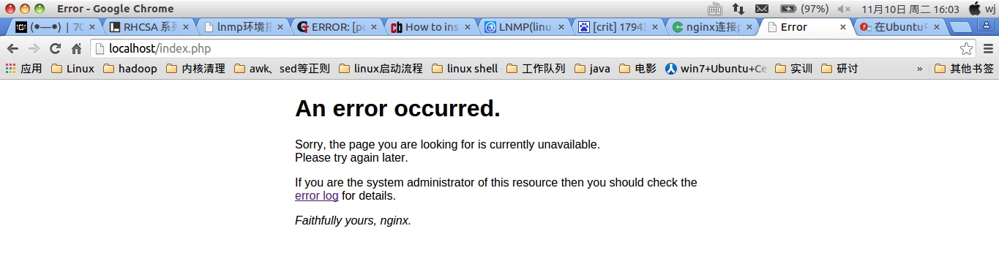
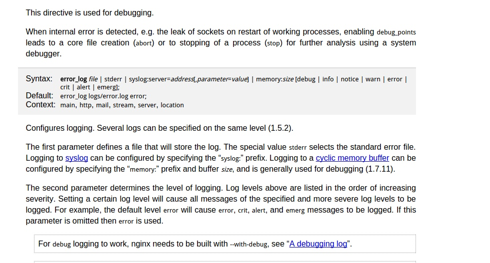
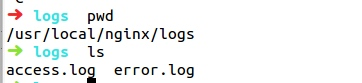
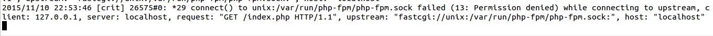
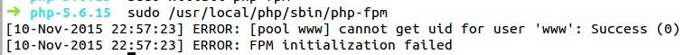
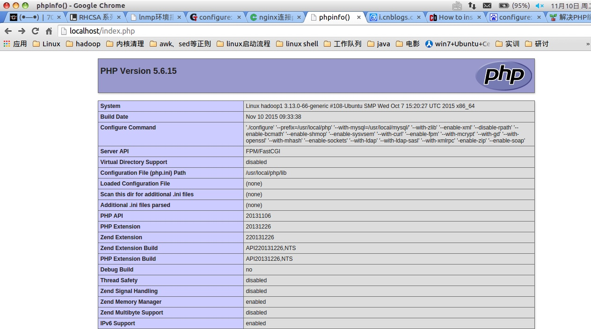

ubuntu php5.6源码安装
本系列的lnmp的大框架基本上是按照http://www.linuxzen.com/lnmphuan-jing-da-jian-wan-quan-shou-ce-si-lnmpda-jian-yuan-ma-an-zhuang.html来写的
下面的nginx配置文件和php配置文件都有一个小错误，之前误打误撞通过了，今天复习的时候发现又报 connect() to unix:/var/run/php-fpm/php-fpm.sock failed (2: No such file or directory) 这个错误，然后就开始了艰苦卓绝的找错。后来在stack overflow上找到了一个解决方法：
http://serverfault.com/questions/477630/impossible-to-run-php-fpm-on-server-restarts-ubuntu-12-04-x64
大意是在/usr/local/php/etc/php-fpm.conf中listen的目录在/var/run/php-fpm/php-fpm.sock中，但是/var/run是个动态目录，开机后目录下的文件都会重新加载初始化，而php-fpm这个目录根本就不存在，系统也不会为你自动创建，所以改成listen=/var/run/php-fpm.sock即可。同时/usr/local/nginx/nginx.conf的内容也要改。把fastcgi_pass unix:/var/run/php-fpm/php-fpm.sock;改成fastcgi_pass unix:/var/run/php-fpm.sock;
user和group网上都是www或者www-data而我用会报错permission denied，用nobody可以通过。
今天又花了一天时间装了php，感觉php的源码安装也挺麻烦的，整个过程各种报错。下篇文章准备整合所有查找到的报错和解决方法。
php和nginx一样，在安装前需要装一堆的依赖。有libmcrypt、mcrypt、mhash。其实远不止这三个包，在后面的configure和make中还会陆陆续续安装一些依赖。
1.安装libmcrypt、mcrypt、mhash（整个过程都在/usr/local/src/php目录下）
#创建/usr/local/src/php目录并进入 mkdir /usr/local/src/php cd /usr/local/src/php #下载libmcrypt，解压，编译，安装 wget http://sourceforge.net/projects/mcrypt/files/Libmcrypt/2.5.8/libmcrypt-2.5.8.tar.gz tar -xzvf libmcrypt-2.5.8.tar.gz && cd libmcrypt-2.5.8 ./configure make -j2 && make install #下载mhash，解压，编译，安装 wget http://sourceforge.net/projects/mhash/files/mhash/0.9.9.9/mhash-0.9.9.9.tar.gz tar -xzvf mhash-0.9.9.9.tar.gz && cd mhash-0.9.9.9 ./configure && make -j2 && make install # 这两个包安装完成后要把动态链接库做一个软连接到/usr/lib,以为接下来的mcrypt依赖于这两个包 ln -s /usr/local/lib/libmcrypt* /usr/lib ln -s /usr/local/lib/libmhash.* /usr/lib/ ln -s /usr/local/bin/libmcrypt-config /usr/bin/libmcrypt-config #下载mcrypt，解压，安装，编译 wget http://sourceforge.net/projects/mcrypt/files/MCrypt/2.6.8/mcrypt-2.6.8.tar.gz/download tar -zxvf mcrypt-2.6.8.tar.gz && cd mcrypt-2.6.8 ./configure && make -j2 && make install
2.生成配置文件（整个过程都在/usr/local/src/php/php-5.6.15目录下）
wget http://cn2.php.net/distributions/php-5.6.15.tar.gz tar -xzvf php-5.6.15.tar.gz && cd php-5.6.15 sudo ./configure --prefix=/usr/local/php --with-mysql=/usr/local/mysql/ --with-zlib --enable-xml --disable-rpath --enable-bcmath --enable-shmop --enable-sysvsem --with-curl --enable-fpm --with-mcrypt --with-gd --with-openssl --with-mhash --enable-sockets --with-ldap --with-ldap-sasl --with-xmlrpc -enable-zip --enable-soap
在configure的时候要注意，--enable-safe-mode --enable-discard-path --enable-fastcgi --enable-force-cgi-redirect参数从5.3版本开始就默认开启了，5.4开始不支持这些选项，所以在参考其他教程时要注意有些选项不需要写到自己的configure中了。我看到的90%的参考教程都写了一两个不支持的参数的。当然你如果写了也没关系，系统不会计算进去。
有一个选项需要强调一下，就是--enable-fpm，如果你在搭建环境时是需要php和nginx结合的，那么这个选项必写。由于我是搭建的LNMP，所以这个参数加上了。想要详细了解选项的，使用./configure -h查看。
我在configure遇到的问题:
①configure: error: Please reinstall the libcurl distribution -easy.h should be in < curl-dir >/include/curl/
解决方法：需要安装curl-devel，ubuntu源中没有，去官网下载并编译安装（也可以直接apt-get下载php5-curl、curl、libcurl4-gnutls-dev）
cd /usr/local/src/php wget http://curl.haxx.se/download/curl-7.45.0.tar.gz sudo tar xzvf curl-7.45.0.tar.gz && cd curl-7.45.0.tar.gz sudo ./configure && sudo make -j2 && sudo make install
再次configure又遇到问题
②configure: error: sasl.h not found!
解决方法：sudo apt-get install libsasl2-dev
再次使用上面的configure，生成配置文件，没有再报错了。
3.编译安装(在/usr/local/src/php/php-5.6.15下)
cd /usr/local/src/php/php-5.6.15 && sudo make -j2
报错①：
usr/bin/ld: ext/ldap/.libs/ldap.o: undefined reference to symbol 'ber_strdup@@OPENLDAP_2.4_2'
//usr/lib/x86_64-linux-gnu/liblber-2.4.so.2: error adding symbols: DSO missing from command line
解决方法：
一开始我查资料说是没有安装openldap，然后就查了openldap的安装方法，结果openldap用db做存储方案，就是说还要编译安装db（这个db不是mysql，就叫db）。结果搞了半天db和openldap都安装完再编译发现还是报这个错。最后在网上一个一个试，找到了一个解决方法。原文是这么说的
遇到这种类似的情况，说明「./configure 」沒抓好一些环境变数值。 在PHP源码目录下 vi Makefile 找到 EXTRA_LIBS 行，在行末添加 ‘ -llber ‘ 保存退出再次make即可。 cd /usr/local/src/php/php-5.6.15 vim Makefile 找EXTRA_LIBS行，在末尾添加--llber
希望遇到这个问题的同学可以引以为戒不要走弯路了。
再次编译，又报错②：
/usr/local/src/php/php-5.6.15/sapi/cli/php: error while loading shared libraies: libmysqlclient.so.20: cannot open shared object file: No such file or directory
解决办法：
找到libmysqlclient.so.20,并做软链接
find / -name "libmysqlclient.so.20" /usr/local/mysql/lib/libmysqlclient.so.20 /usr/local/src/mysql-5.7.9/libmysql/CMakeFiles/CMakeRelink.dir/libmysqlclient.so.20 /usr/local/src/mysql-5.7.9/libmysql/libmysqlclient.so.20 echo "/usr/local/lib" >>/etc/ld.so.conf echo "/usr/local/mysql/lib" >>/etc/ld.so.conf sudo ldconfig make
再次编译，又他妈报错了，此时我的心情真的是崩溃的
报错③：
chmod: 无法访问"ext/phar/phar.phar": 没有那个文件或目录
解决办法：
mkdir -p ext/phar/phar.phar
再次编译，没有错了。
make install
4、配置php（在/usr/local/src/php/php-5.6.15下）
cd /usr/local/src/php/php-5.6.15 cp php.ini-production /usr/local/php/php.ini # 如果是开发就复制php.ini-development cp /usr/local/php/etc/php-fpm.conf.default /usr/local/php/etc/php-fpm.conf ln -s /usr/local/php/bin/php /usr/bin/ echo “listen = /var/run/php-fpm.sock” >> /usr/local/php/etc/php-fpm.conf
使用nginx服务器等待检测php是否安装成功
编辑nginx配置文件：
vi /usr/local/nginx/conf/nginx.conf location ~ \.php$ { fastcgi_pass unix:/var/run/php-fpm.sock; fastcgi_index index.php; fastcgi_param SCRIPT_FILENAME /scripts$fastcgi_script_name; include fastcgi_params; include fastcgi.conf; }
在/usr/local/nginx/html下创建index.php
cd /usr/local/nginx/html vi /usr/local/nginx/html/index.php <?php phpinfo(); ?>
5.启动php
mkdir /var/run/php-fpm(这一步在每次启动系统时都要做,因为/var/run是个动态目录,系统重启php-fpm就没了).
/usr/local/php/sbin/php-fpm
报错①：
ERROR: [pool www] cannot get gid for group 'nobody'
解决方法：
groupadd nobody
关闭php在开启（不知道php有没有重启选项，只能这样做了）
sudo killall php-fpm /usr/local/php/sbin/php-fpm
没报错了，此时我以为我已经成功了，呵呵，too young too simple
开始检测是否安装成功。
开启nginx：
sudo /usr/lcoal/nginx/nginx
在浏览器输入localhost/index.html,结果如下:

呵呵呵。。。。。。。。。。。。。。。。。。。。。。。。。
就快要成功了我会轻易放弃?果断点了个error log，以为他会引领我找到错误日志，结果是这么个鸟玩意

等于没说。后来我一想这是nginx服务器啊，应该看nginx的错误日志，进入nginx，果然发现了logs

tail -f error.log，实时查看错误日志。再打开一个终端，执行php-fpm，此时error.log刷出了这样的信息：

此时报错：connect() to unix:/var/run/php-fpm/php-fpm.sock failed (13: Permission denied) while connecting to upstream
我检查了一下 /tmp/php-cgi.sock 发现该文件拥有者是root，而nginx和php-fpm都是www用户来运行的，按理讲，这个sock文件也应该是www才对。于是修改php-fpm.conf文件
sudo vim /usr/local/php/etc/php-fpm.conf user=nobody group=nobody listen.owner = nobody listen.group = nobody listen.mode = 0660
结果如下图：

成功了，但是没有www用户，猛然想起之前增加的组是nobody，于是又把php-fpm.conf改了
sudo vim /usr/local/php/etc/php-fpm.conf listen.owner = www listen.group = www listen.mode = 0660
在浏览器中输入localhost/index.php,如图，成功！！！！！！！！
